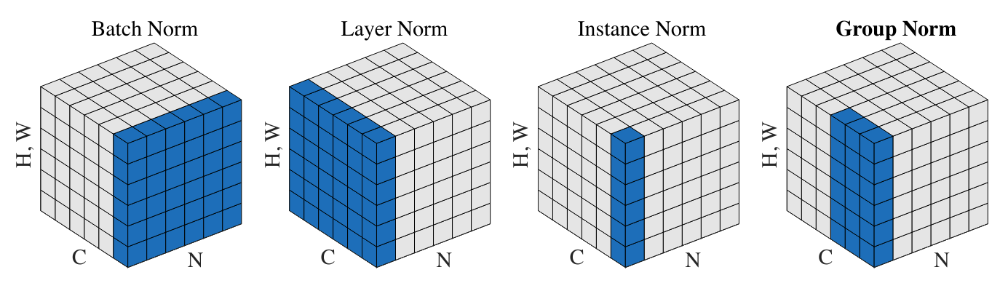

Batch Normalization#
La Batch Normalization (ou normalisation par lot) a été introduite en 2015 dans l’article Batch Normalization: Accelerating Deep Network Training by Reducing Internal Covariate Shift. Elle a eu un impact majeur dans le domaine du Deep Learning. Aujourd’hui, la normalisation est utilisée presque systématiquement, qu’il s’agisse de BatchNorm, LayerNorm ou GroupNorm (et d’autres).
L’idée de la BatchNorm est simple et liée au notebook précédent. On cherche à obtenir des preactivations suivant une distribution gaussienne à chaque couche du réseau. On a vu qu’une bonne initialisation permet d’avoir ce comportement, mais elle n’est pas toujours évidente, surtout avec de nombreuses couches différentes.
La BatchNorm normalise les preactivations par rapport à la dimension du batch avant de les passer dans les fonctions d’activation. Cela garantit une distribution gaussienne à chaque étape.
Cette normalisation n’affecte pas l’optimisation car il s’agit d’une fonction dérivable.
Implémentation#
Reprise du code#
On va reprendre le code du notebook précédent pour implémenter la batch normalization.
import torch
import torch.nn.functional as F
%matplotlib inline
words = open('../05_NLP/prenoms.txt', 'r').read().splitlines()
chars = sorted(list(set(''.join(words))))
stoi = {s:i+1 for i,s in enumerate(chars)}
stoi['.'] = 0
itos = {i:s for s,i in stoi.items()}
block_size = 3 # Contexte
def build_dataset(words):
X, Y = [], []
for w in words:
context = [0] * block_size
for ch in w + '.':
ix = stoi[ch]
X.append(context)
Y.append(ix)
context = context[1:] + [ix]
X = torch.tensor(X)
Y = torch.tensor(Y)
print(X.shape, Y.shape)
return X, Y
import random
random.seed(42)
random.shuffle(words)
n1 = int(0.8*len(words))
n2 = int(0.9*len(words))
Xtr, Ytr = build_dataset(words[:n1]) # 80%
Xdev, Ydev = build_dataset(words[n1:n2]) # 10%
Xte, Yte = build_dataset(words[n2:]) # 10%
torch.Size([180834, 3]) torch.Size([180834])
torch.Size([22852, 3]) torch.Size([22852])
torch.Size([22639, 3]) torch.Size([22639])
embed_dim=10 # Dimension de l'embedding de C
hidden_dim=200 # Dimension de la couche cachée
C = torch.randn((46, embed_dim))
W1 = torch.randn((block_size*embed_dim, hidden_dim))*0.01 # On initialise les poids à une petite valeur
b1 = torch.randn(hidden_dim) *0 # On initialise les biais à 0
W2 = torch.randn((hidden_dim, 46))*0.01
b2 = torch.randn(46)*0
parameters = [C, W1, b1, W2, b2]
for p in parameters:
p.requires_grad = True
Voici notre code de propagation avant :
batch_size = 32
ix = torch.randint(0, Xtr.shape[0], (batch_size,))
# Forward
Xb, Yb = Xtr[ix], Ytr[ix]
emb = C[Xb]
embcat = emb.view(emb.shape[0], -1)
hpreact = embcat @ W1 + b1
h = torch.tanh(hpreact)
logits = h @ W2 + b2
loss = F.cross_entropy(logits, Yb)
Implémentation de la BatchNorm#
D’après l’article, voici les informations :

Dans un premier temps, il s’agit de normaliser.
Pour cela, on calcule la moyenne et l’écart type de hpreact puis on normalise avec ces valeurs :
epsilon=1e-6
hpreact_mean = hpreact.mean(dim=0, keepdim=True)
hpreact_std= hpreact.std(dim=0, keepdim=True)
hpreact_norm = (hpreact - hpreact_mean) / (hpreact_std+epsilon)
On peut maintenant intégrer cette normalisation à la propagation avant.
Avant cela, notons qu’on n’a pas encore implémenté la partie scale and shift :

À quoi ça sert ? : La normalisation confine les poids à prendre des valeurs d’une gaussienne centrée réduite. Cela réduit les capacités d’expression du modèle. Les paramètres apprenables \(\gamma\) et \(\beta\) permettent de contourner ce problème en ajoutant un shift avec \(\beta\) et un scale avec \(\gamma\).
Comme il s’agit de paramètres apprenables, on doit aussi les ajouter aux paramètres du modèle :
C = torch.randn((46, embed_dim))
W1 = torch.randn((block_size*embed_dim, hidden_dim))*0.01 # On initialise les poids à une petite valeur
b1 = torch.randn(hidden_dim) *0 # On initialise les biais à 0
W2 = torch.randn((hidden_dim, 46))*0.01
b2 = torch.randn(46)*0
# Paramètres de batch normalization
bngain = torch.ones((1, hidden_dim))
bnbias = torch.zeros((1, hidden_dim))
parameters = [C, W1, b1, W2, b2, bngain, bnbias]
for p in parameters:
p.requires_grad = True
Et en propagation avant, on aura donc :
batch_size = 32
ix = torch.randint(0, Xtr.shape[0], (batch_size,))
# Forward
Xb, Yb = Xtr[ix], Ytr[ix]
emb = C[Xb]
embcat = emb.view(emb.shape[0], -1)
hpreact = embcat @ W1 + b1
# Batch normalization
bnmean = hpreact.mean(0, keepdim=True)
bnstd = hpreact.std(0, keepdim=True)
hpreact = bngain * (hpreact - bnmean) / bnstd + bnbias
h = torch.tanh(hpreact)
logits = h @ W2 + b2
loss = F.cross_entropy(logits, Yb)
Le problème de la Batch Normalization#
En y réfléchissant un peu, on peut identifier des problèmes potentiels liés à la BatchNorm :
Un exemple est impacté par les autres éléments du batch : Normaliser selon la dimension du batch signifie que les valeurs de chaque exemple au sein du batch sont influencées par les autres exemples. Cela pourrait sembler problématique, mais en pratique, c’est plutôt une bonne chose. L’utilisation de batchs aléatoires à chaque époque permet une régularisation, ce qui réduit le risque de overfit sur les données. Néanmoins, si on veut éviter ce problème, on peut utiliser d’autres méthodes de normalisation qui ne normalisent pas selon la dimension du batch. En pratique, la BatchNorm est encore largement utilisée car elle fonctionne très bien empiriquement.
Phase de test sur un seul élément : Pendant l’entraînement, chaque élément est influencé par les autres éléments de son batch. Cependant, en phase d’inférence, lorsqu’on utilise le modèle sur un seul élément, on ne peut plus appliquer la BatchNorm. C’est un problème car on veut éviter un comportement différent pendant l’entraînement et l’inférence.
Pour résoudre ce problème, on a deux solutions :
On peut calculer la moyenne et la variance sur l’ensemble des éléments à la fin de l’entraînement et utiliser ces valeurs. En pratique, on ne veut pas faire une itération supplémentaire sur l’ensemble du dataset juste pour ça, donc personne ne fait comme ça.
Une autre solution consiste à mettre à jour la moyenne et la variance tout au long de l’entraînement grâce à un EMA (exponential moving average). À la fin de l’entraînement, on aura une bonne approximation de la moyenne et de la variance de l’ensemble des éléments d’entraînement.
En pratique, on peut l’implémenter comme ça en Python :
C = torch.randn((46, embed_dim))
W1 = torch.randn((block_size*embed_dim, hidden_dim))*0.01 # On initialise les poids à une petite valeur
b1 = torch.randn(hidden_dim) *0 # On initialise les biais à 0
W2 = torch.randn((hidden_dim, 46))*0.01
b2 = torch.randn(46)*0
# Paramètres de batch normalization
bngain = torch.ones((1, hidden_dim))
bnbias = torch.zeros((1, hidden_dim))
bnmean_running = torch.zeros((1, hidden_dim))
bnstd_running = torch.ones((1, hidden_dim))
parameters = [C, W1, b1, W2, b2, bngain, bnbias]
for p in parameters:
p.requires_grad = True
batch_size = 32
ix = torch.randint(0, Xtr.shape[0], (batch_size,))
# Forward
Xb, Yb = Xtr[ix], Ytr[ix]
emb = C[Xb]
embcat = emb.view(emb.shape[0], -1)
hpreact = embcat @ W1 + b1
# Batch normalization
bnmeani = hpreact.mean(0, keepdim=True)
bnstdi = hpreact.std(0, keepdim=True)
hpreact = bngain * (hpreact - bnmeani) / bnstdi + bnbias
with torch.no_grad(): # On ne veut pas calculer de gradient pour ces opérations
bnmean_running = 0.999 * bnmean_running + 0.001 * bnmeani
bnstd_running = 0.999 * bnstd_running + 0.001 * bnstdi
h = torch.tanh(hpreact)
logits = h @ W2 + b2
loss = F.cross_entropy(logits, Yb)
Note : Dans notre implémentation, on a choisi 0.001 pour notre EMA. Dans la couche BatchNorm de PyTorch, ce paramètre est défini par momentum et sa valeur par défaut est 0.1. En pratique, le choix de cette valeur dépend de la taille du batch par rapport à la taille du jeu de données d’entraînement. Pour un gros batch avec un petit jeu de données, on peut prendre 0.1, par exemple. Pour un petit batch avec un gros jeu de données, on prend plutôt une plus petite valeur.
Testons maintenant l’entraînement de notre modèle pour vérifier que la couche fonctionne. Pour ce petit modèle, on n’aura pas de différence de performance.
lossi = []
max_steps = 200000
for i in range(max_steps):
ix = torch.randint(0, Xtr.shape[0], (batch_size,))
Xb, Yb = Xtr[ix], Ytr[ix]
emb = C[Xb]
embcat = emb.view(emb.shape[0], -1)
hpreact = embcat @ W1 + b1
# Batch normalization
bnmeani = hpreact.mean(0, keepdim=True)
bnstdi = hpreact.std(0, keepdim=True)
hpreact = bngain * (hpreact - bnmeani) / bnstdi + bnbias
with torch.no_grad(): # On ne veut pas calculer de gradient pour ces opérations
bnmean_running = 0.999 * bnmean_running + 0.001 * bnmeani
bnstd_running = 0.999 * bnstd_running + 0.001 * bnstdi
h = torch.tanh(hpreact)
logits = h @ W2 + b2
loss = F.cross_entropy(logits, Yb)
for p in parameters:
p.grad = None
loss.backward()
lr = 0.1 if i < 100000 else 0.01
for p in parameters:
p.data += -lr * p.grad
if i % 10000 == 0:
print(f'{i:7d}/{max_steps:7d}: {loss.item():.4f}')
lossi.append(loss.log10().item())
0/ 200000: 3.8241
10000/ 200000: 1.9756
20000/ 200000: 2.7151
30000/ 200000: 2.3287
40000/ 200000: 2.1411
50000/ 200000: 2.3207
60000/ 200000: 2.3250
70000/ 200000: 2.0320
80000/ 200000: 2.0615
90000/ 200000: 2.2468
100000/ 200000: 2.2081
110000/ 200000: 2.1418
120000/ 200000: 1.9665
130000/ 200000: 1.8572
140000/ 200000: 2.0577
150000/ 200000: 2.1804
160000/ 200000: 1.8604
170000/ 200000: 1.9810
180000/ 200000: 1.8228
190000/ 200000: 1.9977
Considérations supplémentaires#
Biais : La batch norm normalise les preactivations des poids. Cette normalisation annule le biais (car celui-ci décale la distribution, alors que nous la recentrons). Lorsqu’on utilise la BatchNorm, on peut se passer du biais. En pratique, si on laisse un biais, ça ne pose pas de problème, mais c’est un paramètre du réseau qui sera inutile.
Placement de la BatchNorm : D’après ce qu’on a vu, il est logique de placer la BatchNorm avant la fonction d’activation. En pratique, certains préfèrent la placer après la couche d’activation, donc ne soyez pas étonné si vous tombez sur ça dans la littérature ou dans un code.
Autres normalisation#
Nous allons faire un tour rapide des autres normalisations utilisées pour l’entraînement des réseaux de neurones.

Figure extraite de l’article
Layer Normalization : Cette couche de normalisation est également très fréquemment utilisée, notamment dans les modèles de langage (GPT, Llama). Il s’agit de normaliser sur l’ensemble des activations de la couche plutôt que sur l’axe du batch. Dans notre implémentation, cela reviendrait simplement à changer :
# Batch normalization
bnmeani = hpreact.mean(0, keepdim=True)
bnstdi = hpreact.std(0, keepdim=True)
# Layer normalization
bnmeani = hpreact.mean(1, keepdim=True)
bnstdi = hpreact.std(1, keepdim=True)
Instance Normalization : Cette couche normalise les activations sur chaque canal de chaque élément indépendamment.
Group Normalization : Cette couche est une sorte de fusion entre la LayerNorm et l’InstanceNorm, puisqu’on calcule la normalisation sur des groupes de canaux (si la taille d’un groupe vaut 1, c’est l’InstanceNorm et si la taille d’un groupe vaut C, c’est la LayerNorm)